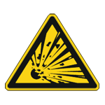
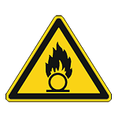

4. Safety
4.1. Risk Assessment
Depending on the countries of the target application, there are different standards to regard. In the European Union, the applicable directives lead to different safety requirements. These have a variety of risk graphs for the risk assessment. Although they are only slightly different they are not adaptable to each other. Since the target country and use of foxBMS 2 is unknown, the users of the system need to do a risk assessment on their own according to their concerns.
Some European directives that can be relevant for the foxBMS 2 users:
General product safety
Low voltage
Machinery
etc…
Some example of safety standards that might fit the application of the foxBMS 2 users:
IEC 61508 (Functional Safety)
ISO 25119 (Agriculture)
ISO 26262 (Road Vehicles)
EN 13849 (Machinery)
EN 61511 (Process Industry)
EN 50156 (Furnaces)
etc …
A list of standards that might fit to the target application can be found here:
4.2. Standards
In order to use the foxBMS 2 safely, at least the following standards or similar ones should be regarded:
DIN VDE 0100-410 (IEC 60364-4-41)
DIN VDE 0100-600 (IEC 60361-6)
EN 60529
EN 50272
etc …
Recommended readings:
4.3. Safety Instructions Before Using foxBMS 2
Danger
Risk of electric shock. You need to be an electrically skilled person in order to work with batteries and assemble battery systems. Regard IEC 60364-4-41, IEC 60364-6, IEC 60529 (DIN VDE 0100-410, DIN VDE 0100-600, VDE 0470-1).
Danger

Risk of electric shock while assembling, repairing, maintaining, servicing or disassembling the battery system. You need skills in live working in order to work with the battery system and assemble it. Wear personal insulating protective equipment.
Danger

Risk of fire, explosion and chemical hazards through the battery cells. You need to be a battery skilled person in order to work with the battery system and assemble it. Use safe cells with CID, PTC and OPD. Use the battery system in a confined area. Keep sand, water and fire extinguisher close to the system to fight fire. Regard local fire safety regulations.
Danger


With an electrical short, battery cells will heat up and explode. The short might create an electric arc and cause fire. Do not short-circuit battery cells or batteries. Always cover at least one terminal of the cell or battery and keep the poles away from each other. Watch out while working on the cells or batteries. Do not wear necklaces or jewelry to prevent shorts. Wear personal arc protective equipment (e.g., protection clothes, face protection, protection glasses, protection gloves). Keep other persons in a safe distance.
Danger
Battery cells and batteries expand and shrink through thermal differences and through charging and discharging during usage. If the battery cells are too tight and squeezed together, they can get damaged. The movement of the cells will loosen screws that might fall down and create an electrical shortage. A fire might start or other hazards can occur. Leave enough room between the cells and use locknuts.
Danger
Electric short and hazards through reversed polarity or wrong connection can occur. Be cautious and prevent battery cells and batteries from wrong connection.
Danger
Electrolyte may cause irritation or intoxication and lead to death or threaten your health. Hydrofluoric acid (HF) or phosphane (PH3) might develop. Wear eye protection and gloves while working with electrolyte. Regard material safety data sheet (MSDS) from the battery cell manufacturer.
Danger
Old and new battery cells, different technologies or capacities of cells may vary very much in both voltage and current. This can lead to an overcurrent or overvoltage same as undervoltage and result in cell or battery damage with dramatic consequences. Do not use old cells or batteries with the system and do not mix cells or batteries of different chemistry or technologies. Change all cells of a battery at the same time. Do not mix cells within the battery. Use only one type of cell throughout the whole system.
Warning

Developing gas from the battery cells or battery systems may cause fire. Use the battery cells and the battery system only in a good ventilated environment to ensure flammable and toxic gases will be removed in case of degassing of a battery cell.
Warning
Overvoltage or reverse polarity at the slaves can cause an electrical short, fire and following hazards. Use fuses on each cell to prevent overcurrent through the electrical short. The slaves can take a maximum amount of 12 cells with a voltage sum between 11V and 55V. Beware of the amount of cells and the cell voltage.
Warning
Chemicals from the battery might threaten your health. Do not touch chemicals and wear chemical protective gloves and safety goggles. Regard material safety data sheet (MSDS) from the battery cell manufacturer.
Warning
The soldering heat can damage safety parts of the cells or battery. Do not solder anything directly to the cells or battery. Follow the mounting instructions of the manufacturer.
Warning
Damaged batteries or cells can cause fire. Use flame retardant materials in your system and keep burnable materials away. Apply a temperature sensor to detect over temperature and keep a fire extinguisher close to the battery system. Do not use damaged cells or batteries.
Warning
Parallel cells with an electrical short can cause a large over current and over temperature that bring other hazards with them. Assemble breaking elements between parallel cells to avoid the short current.
Warning
Overvoltage or overcurrent through charging or discharging can lead to fire, leakage or explosion. Always use a proper charger for the cells and the batteries and avoid heavy loads and rapid charges and discharges. Remove fully charged battery packs from the charger.
Warning

Risk of electric shock through an error in the insulation. Use a ground fault detector or an insulation monitor and regard IEC 60364-4-41 and IEC 60364-6 (DIN VDE 0100-410, DIN VDE 0100-600).
Warning
Risk of electric shock while working on live parts. Use only insulated tools while assembling, disassembling, maintaining, servicing or dismantling the battery system. Never open battery cells.
Warning
Explosive or flammable environment around the battery cells or the battery system can start burning or explode. Do not use the battery system in an explosive environment.
Warning

Toxic fumes through evaporating electrolyte or other substances through an electrical short may lead to intoxication, chocking or breathing problems. Assemble and disassemble the system carefully and keep gas mask or breathing aid in close environment.
Caution
Heavy battery parts can fall on your feet and sharp edges might cut or hurt you. Use solid housing and add handles. Wear personal protective equipment, gloves, shoes and other clothes for working.
Caution
An electric arc or exploding cell may cause loud noise. Wear ear plugs or ear muffs with other personal protective equipment. Stay out and keep other persons out of the testing area.
Caution
Soldering material may cause irritation or intoxication and lead to death or threaten your health. Wear gloves while working with soldering materials and wash hands properly afterwards.
Caution
Corrosive materials, humidity and gas can lead to corrosion of any part of the system. Failure of electrical or electronic parts especially safety responsible parts may lead to other hazards. Keep the battery system in a dry and clean environment and away from corrosive materials.
Note
Damaged battery cells or batteries may leak electrolyte, especially when pouch battery cells are used and the pouch bag has been damaged. Put a basin underneath for dripping the electrolyte.
Note
Undervoltage leads to a damaged cell or battery system. Prevent deep discharge. Never charge and use again battery cells or batteries after deep discharge has occurred.

{kind=link}
{kind=link}
{kind=link}
{kind=link}
{kind=link}
{kind=link}
{kind=link}
{kind=link}
{kind=link}
{kind=link}
{kind=link}
{kind=link}